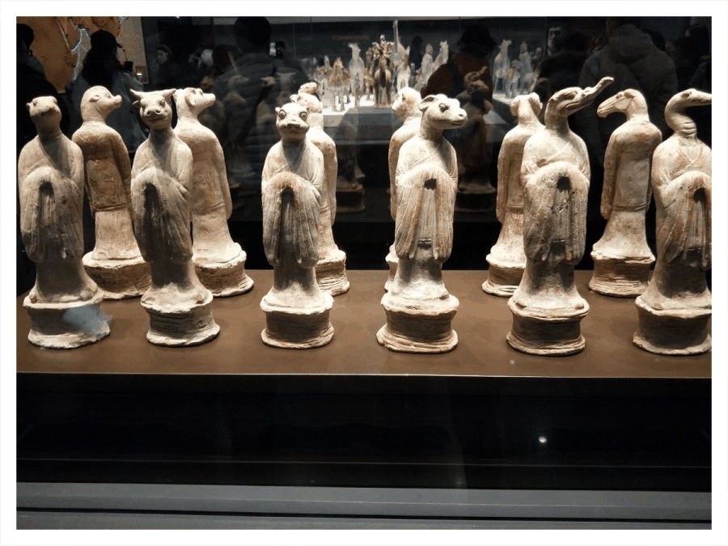
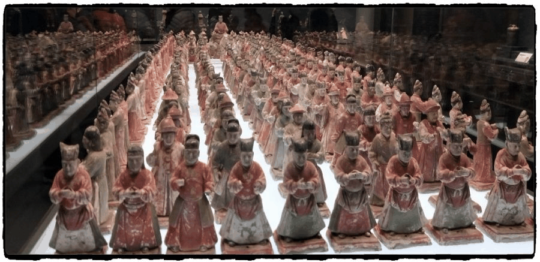
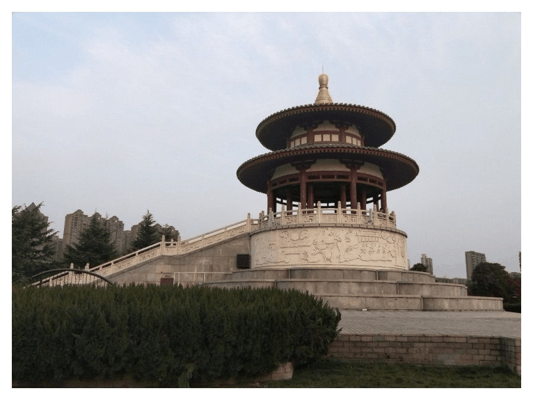
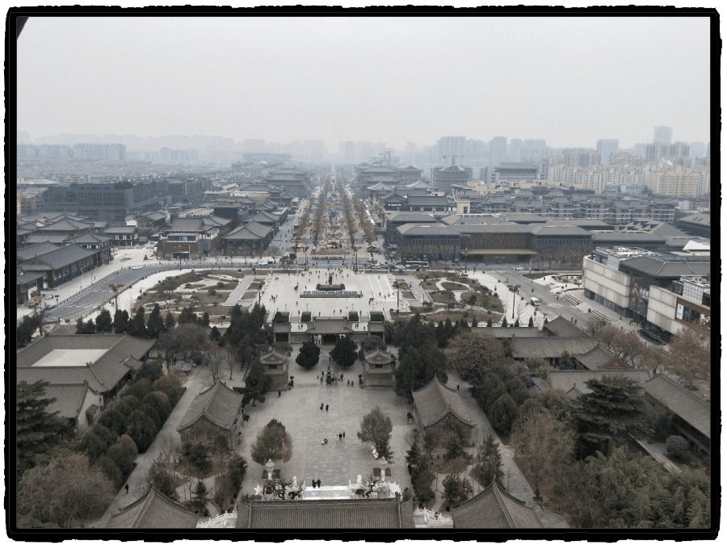
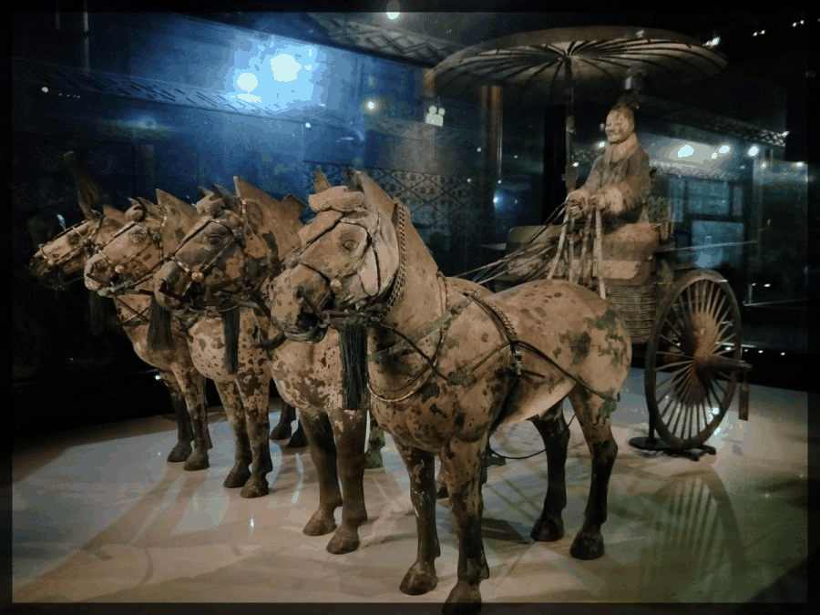

【秦简拓语·十六】以史为径，踏古寻芳

堂皇转眼凋零
喧腾是短命的别名
在流光溢彩的日子里
生命被注上妖冶的印记
历史不曾被阻断，时间也不曾被扭转，一切在簌簌的落沙声中悄然改变着，陈旧的陈旧着，衰老的衰老着，老旧便只管随他老旧吧，安详地交给世界一副慈祥和美。
这里正是中华历史的荒原：如雨的马蹄，如雷的呐喊，如注的热血。慈母的白发，春闺的遥望，稚儿的夜哭。故乡柳荫下的诀别，将军咆哮时的怒目，丢盔弃甲后的军旗，随着一阵烟尘，又一阵烟尘，都飘散远去。




阳光下笼罩着的长安城，是无与伦比的美景。光与影以最畅直的线条进行分割，金黄和黛赭都纯净的毫无斑驳。日夜的风，时而把城脊、山坡装成波荡，极其款曼平适，不含一丝涟漪，时而把楼宇、古道塑成剑刃，凌厉萧肃异常，未留半分温度。
四四方方的城墙圈住了皇家的亭台楼阁，锁住了帝王的无上威严，围住了后妃的贤良淑德，包裹了臣子的鞠躬尽瘁，也保护了百姓的一世长安。


曾几何时，在那金銮大殿之上，也有过八方异族番邦“九天阊阖开宫殿,万国衣冠拜冕旒”一般的大气恢弘。曾几何时，在那参差错落的宫闱之中，也有过“春宵苦短日高起，从此君王不早朝”的风流逸事。曾几何时，在那盘盘囷囷的高阁之内，书写了“长桥卧波，复道行空”的巍峨壮观。曾几何时，在那莽莽无边的黄土之下，埋藏了“马作的卢飞快，弓如霹雳弦惊”威武之师……
风若遥远的回音，追着梦的翅膀，在亘古不变的神话里寻找一个金壁辉煌的王朝。古老的风铃开始变奏，浑厚如黄钟大吕的音符直贯苍穹，一袭轻纱下的曼妙舞蹈，摇醒了一个盛世的传说。
是的，传说。

我们对这个世界，知道的还实在太少，无数的未知包围着我们。而我们手持着所谓现实的青涩与懵懂，无奈的年轻与匮乏，能做的只有求知，求索。触摸着古老的苍树，脚踩着厚重的城墙，辨认着衍化的文字，赞叹着先辈的智慧。
我极尽地想要追上那些“奇迹”的创造，那些“天才”的遐想，那些“史诗”的巨作，是它们，芬芳了岁月，惊艳了时代，震响了世界。


只是，再也读不到那传世的檄文，只剩廊柱上龙飞凤舞的楹联；再也找不见慷慨的遗恨，只剩下几座即可凭吊也可休息的亭台；再也期待不到当初那般历史的震颤，只有千万年来凌然安坐着的万古湖山。
或许，文化，是条太长远的纽带，带子的这段连着我，那段系着上下五千年。或许，文化，是本太仓促的书，来不及记录夜空中的漫天繁星，只好留下划过人们心田的江河湖海。或许，文化，是首不曾命名的小调，它来自每片土地，又飞向每个角落。又或许，文化，是个未完待续的故事，我们每个人都是故事的主人公，也都是故事的剧作者。

节物风光不相待，桑田碧海须臾改。
昔时金阶白玉堂，即今惟见青松在。
寂寂寥寥扬子居，年年岁岁一床书。
独有南山桂花发，飞来飞去袭人裾。


来源丨行者无疆实践团
文字丨李竹晴
排版丨邓子孚
审核丨潘雯雯 邓子孚
行者无疆实践团
QQ：2758025831

随行者一起认识世界
长按二维码关注